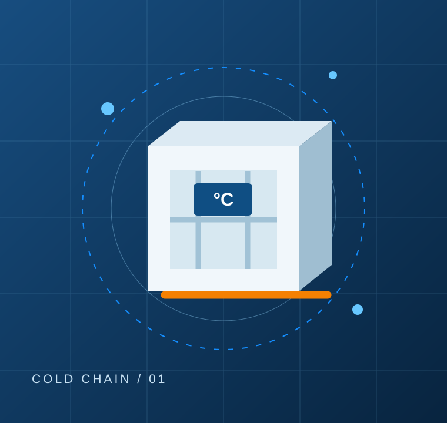

Подготовка к поставке
Собираем информацию о площадке, окне приёмки, необходимых пропусках, условиях въезда и выгрузки.
Рефрижераторные поставки на склады, в распределительные центры и торговые сети Москвы и Московской области.
Приёмка в РЦ часто связана с отдельными требованиями: временными окнами, пропусками, упаковкой и документами. Эти условия важно учесть до выезда, а не уже перед воротами.
Обсудить перевозку ↗
MINIREF / COLD CHAINПараметры услуги согласуются до подачи автомобиля.
Собираем информацию о площадке, окне приёмки, необходимых пропусках, условиях въезда и выгрузки.
Уточняем необходимые сопроводительные документы со стороны заказчика и получателя. Перечень согласуется для конкретной поставки.
Учитываем время на дорогу, процедуру регистрации и возможные ожидания при приёмке.
Для регулярных отгрузок согласуем типовые маршруты и расписание, чтобы снижать количество ручных уточнений.
Да, доставка на склады и в распределительные центры — одно из направлений работы. Условия конкретного получателя уточняются перед рейсом.
Перечень документов и ответственность сторон зависят от договора и характера груза; обсуждаем это до начала работы.